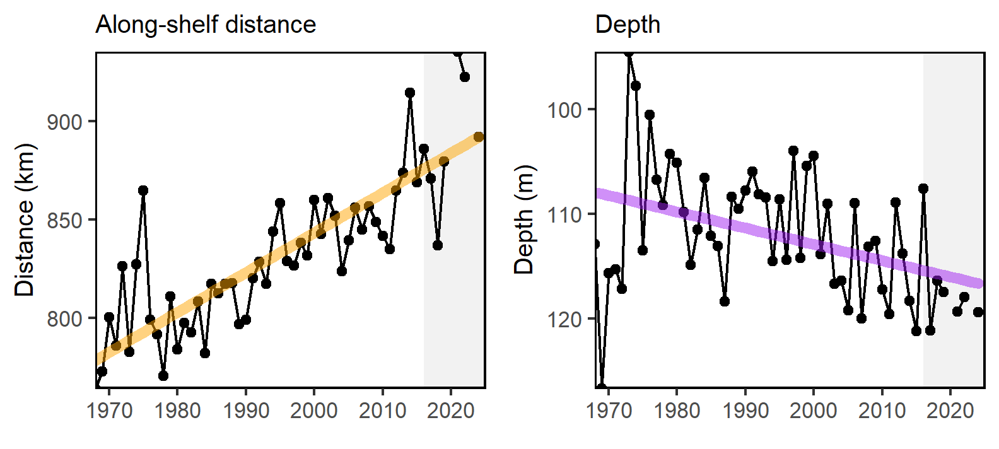

State of the Ecosystem
Mid-Atlantic 2025
MAFMC
20425
State of the Ecosystem (SOE) reporting
Improving ecosystem information and synthesis for fishery managers
State of the Ecosystem: Maintain 2024 structure for 2025
2025 Report Structure
- Graphical summary
- Page 1 report card re: objectives →
- Page 2 risk summary bullets
- Page 3 2024 snapshot
- Performance relative to management objectives
- Risks to meeting management objectives
- Climate and Ecosystem risks
- Offshore wind development
- 2024 Highlights


Updated Objectives and Risks tables aligning with indicators
Ecosystem synthesis themes
Characterizing ecosystem change for fishery management
- Societal, biological, physical and chemical factors comprise the multiple system drivers that influence marine ecosystems through a variety of different pathways.
- Changes in the multiple drivers can lead to regime shifts — large, abrupt and persistent changes in the structure and function of an ecosystem.
- Regime shifts and changes in how the multiple system drivers interact can result in ecosystem reorganization as species and humans respond and adapt to the new environment.


State of the Ecosystem report scale and figures

A glossary of terms (2021 Memo 5), detailed technical methods documentation and indicator data are available online.
Key to figures

Trends assessed only for 30+ years: more information
Orange line = significant increase
Purple line = significant decrease
No color line = not significant or < 30 years
Grey background = last 10 years
2025 State of the Ecosystem Request tracking memo: updates noted along the way
Need to add the files
Mid Atlantic State of the Ecosystem Summary 2025:
Performance relative to management objectives
Seafood production  ,
, 
Profits  ,
,
Recreational opportunities: Effort 
 Effort diversity
Effort diversity
Stability: Fishery not stable; Ecological not stable
Social and cultural:
Fishing engagement and social vulnerability status by community
Revenue climate vulnerability
, majority high risk
Protected species:
Maintain bycatch below thresholds (harbor porpoise, gray seals)


Recover endangered populations (NARW)
State of the Ecosystem Summary 2025:
State of the Ecosystem Summary 2025: 2024 Highlights
Notable 2024 events and conditions
2024 warmest year on record globally. Again.
BUT
Cooler conditions across the coast
Well established Mid Atlantic Cold Pool
Multiple summer upwelling events off NJ
Extreme ocean acidification measured off NJ
Many fishery observations of different spatial and timing patterns, changed abundance
Good scallop recruitment in Nantucket lightship
More red drum in Chesapeake Bay
Arctic copepods in GOM
Cocolithophore bloom off NY
Large whale aggregations
We welcome your observations! northeast.ecosystem.highlights@noaa.gov
2025 Performance relative to management objectives


Objective: Mid Atlantic Seafood production Risk elements: ComFood and RecFood, unchanged
Mid Atlantic Landings drivers: Stock status? TAC? Risk elements: Fstatus, Bstatus, MgtControl
Implications: Mid Atlantic Seafood Production Drivers
Objective: Mid Atlantic Commercial Profits Risk element: CommRev, unchanged
Objective: Mid Atlantic Recreational opportunities ; Risk elements: RecValue, RecDiv
Footnotes
https://www.integratedecosystemassessment.noaa.gov/national/IEA-approach↩︎